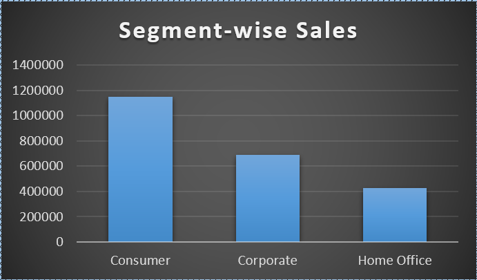
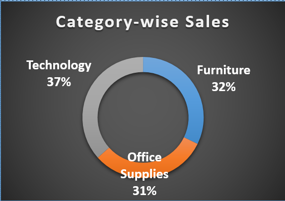
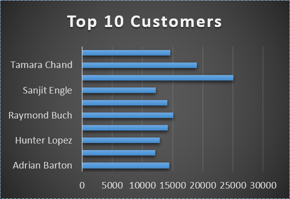
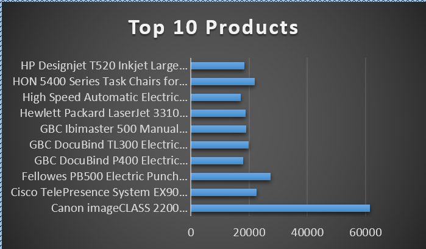
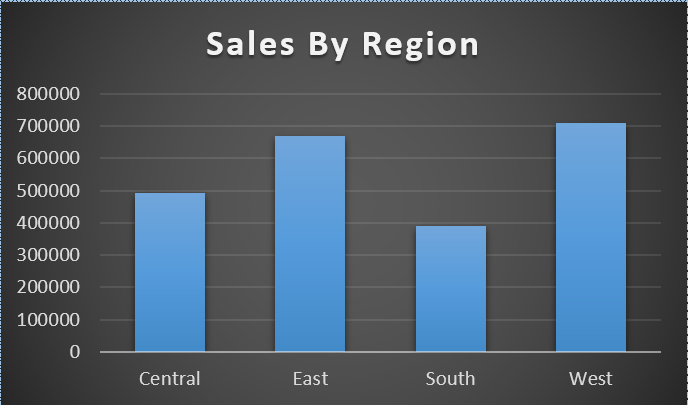
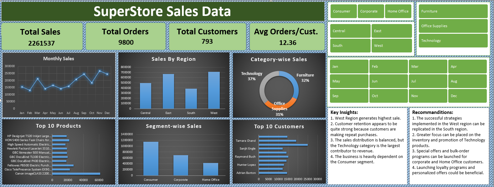

Monthly Sales

Segment Wise Sales

Category Wise Sales

Top 10 Customers

Top 10 Products

Role: Data Analyst | MIS Executive
Project Type: Sales Dashboard
Tools: Excel, Pivot Tables, Pivot Charts, Slicers
Dataset Size: 9,800 Orders
The objective of this Project was to analyze per month sales performance, customer segment, regional performance and product categories to identify growth opportunities and support business decisions.
This project involved the creation of a comprehensive sales dashboard for a superstore, utilizing Excel's powerful data analysis and visualization capabilities. The dashboard provides insights into sales trends, customer behavior, and product performance, enabling stakeholders to make informed business decisions.
The following columns were used in this analysis:
The following steps were followed to prepare the data:






$2,261,537
9,800
793
12.36
This dashboard provides a comprehensive view of the superstore's sales performance across different dimensions. Key insights include:
Based on the analysis, the following recommendations are proposed:
This project demonstrates the following skills:
Through this project, I learned how to transform raw sales data into meaningful business insights using Excel dashboards, Pivot Tables, and interactive visualizations.